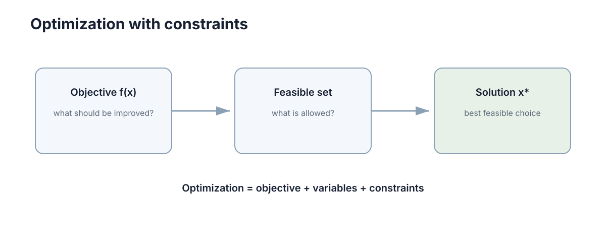

Optimization, Constraints & Uncertainty
这一章讲的事你每天早上都在做，只是没把它写成数学。读完你应该能自己推出三件事：为什么"往最陡的方向走"是唯一不靠猜的选择、为什么约束会把最优解钉死在边界上、以及为什么当参数有 20% 的误差时，一个报到小数点后三位的最优值其实是误导。
一、先看你已经会做的一件事
早上 7:40 出门，要在 7:55 前到公司。你站在楼下做的其实是一连串决策：
- 你在挑"可以自己决定的量"：骑哪条路、要不要绕高架、骑多快。这些是你能动的。
- 你在比"哪条更好"：更快，或者更省力，或者更不容易迟到。你需要一个能比较大小的数，否则"绕高架"和"走小路"根本没法比。
- 有些事你不敢碰：红灯不能闯、限高桥不能上、电量只够 8 km。这些不是你"希望"遵守，而是必须遵守。
把这三条写成数学，就是决策变量、目标函数、约束。优化不是一门新工具，而是把"我想更好"这句话拆成三样东西：能动的、要好的、不能碰的。
整章都沿着这三样走：第三节讲怎么把好坏压成一个数，第四节讲怎么一步步改进，第五、六节讲"停下来"和"不能碰"分别会怎样把答案改掉，第七节把"不能碰"翻译成一张报价单，第八节处理"参数本身就不知道"。
二、为什么"多试几次"不行
最直接的办法是穷举：把所有能选的值一个个试一遍，挑最好的。
它坏在什么地方，看一个具体场景。假设你有 10 个可调的参数，每个参数合理地试 5 个取值——听起来很少。可 \(5^{10}\) 是 976 万次；每个参数试 10 个取值，就是 100 亿次。尝试次数随参数个数指数增长，而不是线性增长，这就是维数灾难。所以任何"把格子划细一点再暴力搜"的想法，在 5 个变量以上就自动失效。
第二个更隐蔽的坏处：即使你愿意暴力搜，你也得先能回答"这一组取值比那一组好多少"。如果目标里同时有"更快"和"更省电"，一快一省怎么比大小？
于是被迫做两件事：
- 把"好不好"压成一个可以比较大小的标量；
- 不再穷举，而是从当前值出发找一个方向走一小步，让这个标量变小，然后重复。
第 1 件是第三节，第 2 件是第四节。两件事合起来就是"数值优化"的全部骨架。
三、把"好不好"压成一个数
先看结论的形状，再回头拆每一项：
术语第一次出现当场拆开：
- 决策变量（decision variable）\(x\)：真正允许你去选的那些量，\(x\in\mathbb{R}^n\)。
- 目标函数（objective function）\(f\)：把一组选择映射成一个数，约定越小越好。
- 不等式约束（inequality constraint）\(g_i(x)\le 0\)：软边界，可以贴上去，不能越过去。
- 等式约束（equality constraint）\(h_j(x)=0\)：硬等式，必须精确满足。
- 可行域（feasible set）：同时满足全部约束的 \(x\) 组成的集合。注意它先于目标函数存在——它决定"哪些解有资格被比较"。

| 组成 | 数学对象 | 建模时必须先回答什么 |
|---|---|---|
| 决策变量 \(x\) | \(x\in\mathbb{R}^n\) | 是否含整数或离散量？ |
| 目标函数 \(f\) | \(f:\mathbb{R}^n\to\mathbb{R}\) | 是标量，还是多项需要加权合并？ |
| 不等式约束 \(g_i\) | \(g_i(x)\le 0\) | 允许轻微违反吗？ |
| 等式约束 \(h_j\) | \(h_j(x)=0\) | 这些约束彼此独立吗？ |
| 可行域 | \(g\le 0\) 与 \(h=0\) 的交集 | 它非空吗？有界吗？ |
3.1 为什么"希望更好"和"绝不能违反"必须分开
这是建模里最常见、代价也最大的一类错：把安全约束写成一个权重极大的惩罚项，塞进目标函数。
它为什么坏？惩罚项只是把违反的代价抬得很高，并没有把违反变成不允许。 当真实可行域是空集时（比如同时要求"距离大于 3 m"和"工作半径小于 2 m"），惩罚法会优雅地返回一个"违反最少"的解，而调用方拿到的是一个普通的最优值，无法区分"这是可接受的近似"还是"这已经撞了安全红线"。
正确的做法是按"违反了会怎样"给约束分类，再决定它进哪里：
| 约束性质 | 应该写成 | 违反时的系统行为 |
|---|---|---|
| 物理上不可能违反 | 硬约束 | 报告不可行，不返回解 |
| 安全红线 | 硬约束 + 执行前检查 | 拒绝执行并切到安全策略 |
| 性能偏好 | 目标函数里的加权项 | 代价上升，结果仍可用 |
| 舒适度 | 正则项 | 轻微下降，不报警 |
一句话："希望"进目标函数，"绝不能"留在约束里。
3.2 量纲会悄悄替你决定权重
就算只留一个目标函数，还有第二个坑。假设目标里有两项，一项是距离、一项是温度，量纲分别是毫米和摄氏度，典型尺度差三个数量级。
你现在要调的就是这两个权重。数值上看起来"都是 1"，但距离项因为数值本身大 1000 倍，实际主导了整个目标函数。于是你精心调的权重并没有在表达偏好，只是在补偿量纲。
标准做法是归一化：每个变量先除以它的典型尺度，让各分量量级都接近 1，再谈权重。这一步不做，后面所有调参都只是在猜。
四、往哪走：为什么负梯度是唯一自然的方向
现在有了标量目标，问题变成：站在 \(x_k\) 上，往哪个方向走一小步能降得最多？
老办法一：随机试方向。 每次随机挑一个方向，好就接受。问题出在次数——在 \(n\) 维空间里随机方向与真实下降方向的夹角期望就是 90°，几乎白走。
老办法二：一次只调一个变量。 这在窄谷地形里会走出之字形：沿 \(x\) 走一步是下降的，沿 \(y\) 走一步也是下降的，但两者合起来的方向才最陡，单独走任何一个都只是来回蹭。
现在推一遍。 对很小的位移 \(\Delta x\)，一阶泰勒近似给出
把位移长度固定住，即 \(\|\Delta x\|=\varepsilon\)，问哪个方向让右边最小——也就是最小化 \(\nabla f(x)^\top\Delta x\)。由 Cauchy–Schwarz 不等式，
等号当且仅当 \(\Delta x\) 与 \(-\nabla f(x)\) 同向时成立。
所以"最陡下降方向就是负梯度"不是经验之谈，它是柯西–施瓦茨不等式取等号的条件。 这就是梯度下降：
\(\alpha\) 叫步长（step size）。
4.1 步长不是越大越好，它有两条硬边界
定义 Lipschitz 常数 \(L\)：可以粗略理解成"梯度变化有多快"；对二次函数，\(L\) 就等于 Hessian 的最大特征值。可以证明：
- \(\alpha<2/L\)：收敛；
- \(\alpha<1/L\)：每一步都单调下降；
- \(\alpha>2/L\)：目标值每步上升，发散。
| 步长情形 | 行为 | 失效模式 |
|---|---|---|
| 远小于 \(1/L\) | 每步下降与步长成正比 | 收敛慢，迭代次数与步长成反比 |
| 接近 \(1/L\) | 接近最优的单调下降 | 要估 \(L\)，估小了就震荡 |
| 大于 \(2/L\) | 目标值上升 | 发散 |
| 固定且偏大 | 越过一阶近似有效区 | 最优点附近来回跳，永不收敛 |
这两条边界为什么长这样？因为一阶近似只在 \(\varepsilon\) 很小时成立：步长越大，\(\Delta x\) 越出近似的有效区，泰勒展开丢掉的二阶项开始占主导，符号可能整个反过来。第九节的实验一会把这件事跑给你看。
4.2 步长合适，方向也可能很差
条件数（condition number） \(\kappa=\lambda_{\max}/\lambda_{\min}\) 衡量地形被拉长的程度。梯度法的误差大致每步乘 \((1-1/\kappa)\)：\(\kappa=100\) 时需要几百步，\(\kappa=10^{6}\) 就是百万量级的迭代。
想摆脱它，就得用曲率信息。牛顿法把一阶近似升级成二阶：
它用 Hessian 的逆把方向重新缩放，等价于把被拉长的谷拉圆。代价两条：每步要做 \(\mathcal{O}(n^3)\) 的线性代数；而且 Hessian 必须在最优点附近正定——鞍点附近它含负特征值，此时牛顿步指向的是上升方向，必须加阻尼或信赖域修正。
五、坑一：停下来，不代表找到了最好
局部最优只要求在某个邻域内没有更好的可行点：存在 \(r>0\)，使所有满足 \(\|x-x^*\|\le r\) 的可行点都有 \(f(x)\ge f(x^*)\)。全局最优要求对可行域里所有点都成立，条件强得多。两者的判据长得一模一样，只差"邻域"和"全体"这几个字——这就是所有麻烦的来源。
| 地形特征 | 一阶条件表现 | 对求解器的影响 |
|---|---|---|
| 局部极小 | 梯度为零且 Hessian 正定 | 迭代停止，通常是好结果 |
| 鞍点 | 梯度为零但 Hessian 有正有负 | 迭代停止，其实还能继续降 |
| 平坦区域 | 梯度范数接近零 | 相对步长过大，进展极慢 |
| 窄谷 | 某些方向曲率极大 | 条件数大，收敛缓慢 |
| 悬崖 | 梯度范数极大 | 步长须缩小，否则跳到远处 |
5.1 凸性为什么值钱：一行证明
凸集要求连接任意两点的线段仍在集合内；凸函数要求弦在图像之上：
对可微凸函数，这条定义等价于一个更好用的不等式：\(f(y)\ge f(x)+\nabla f(x)^\top(y-x)\)。
现在推"局部最优即全局最优"。设 \(x^*\) 是局部最优。假如 \(\nabla f(x^*)\ne 0\)，就沿着负梯度走一小步，取 \(y=x^*-t\nabla f(x^*)\)（\(t>0\) 很小），代入上面那条不等式：
这和 \(x^*\) 是局部最优矛盾。所以必有 \(\nabla f(x^*)=0\)。再对任意可行点 \(y\) 用一次那条不等式：\(f(y)\ge f(x^*)+\nabla f(x^*)^\top(y-x^*)=f(x^*)\)。于是 \(x^*\) 就是全局最优。
反过来，非凸问题只能退而求其次：多跑几次，每次换个初值（重启）。单次成功率为 \(p\) 时，\(k\) 次重启里至少成功一次的概率是
\(p=0.05\) 时，想达到 95% 的把握需要 59 次——代入验证：\(1-0.95^{59}\approx 95.15\%\)。也就是说，一个成功率只有 5% 的方法，靠重启 59 次就能变成"几乎一定成功"，代价是 59 倍算力。
5.2 为什么"再搜细一点"救不了高维
如果每个维度上平均有 \(m\) 个局部极小，\(d\) 维空间里大致有 \(m^d\) 个。\(m=3\)、\(d=20\) 就是 34.9 亿个坑。在高维非凸问题里，"穷举验证全局最优"不是慢，而是原则上不可行——这正是启发式方法和随机重启存在的原因：它们交付的是"当前最好解"，不是"最优解"。
六、坑二：约束会改掉最陡方向
车辆的最快路径可能需要超速，机械臂的最短动作可能超过关节限位。约束一加上，第四节那句"负梯度就是下降方向"立刻失效——因为沿负梯度走出的那一步，很可能直接走出了可行域。
6.1 等式约束：梯度必须垂直于约束面
先看只有一个等式约束 \(h(x)=0\) 的情形。这个方程在 \(n\) 维空间里定义的是一张 \(n-1\) 维曲面，\(h\) 的梯度 \(\nabla h\) 就是这张曲面的法向量。
在曲面上移动只能沿切向。现在问：什么条件下切向再也降不下去？答案是——目标函数的梯度在切向上没有分量。因为只要切向分量不为零，就存在一个贴着曲面走的位移能降低 \(f\)，当前点就不是最优。
"梯度在切向上分量全为零"，等价于"梯度整个落在法向方向上"。而法向方向只有 \(\nabla h\) 一个，于是
几何读法：目标函数的等值线与约束曲面在最优点相切。 如果两者是相交而不是相切，就说明还能沿曲面滑一段把目标压低——所以最优解一定落在"碰一下就走"的那个位置。
6.2 不等式约束与自由度账本
对 \(g(x)\le 0\)，只有贴着边界的那些才起作用。这把可行域劈成两半：在内部，约束可以当不存在，直接回到第四节；在边界上，可行方向变成半个空间，所有"往外走"的方向被禁掉。
为什么要算自由度。 在 \(n\) 维空间里，\(p\) 个等式约束把可行集压到 \(n-p\) 维；再有一个起作用的不等式把一半方向砍掉，于是剩下 \(n-p-1\) 维。代入数字看：
| \(n\) | 等式约束 \(p\) | 起作用的不等式 | 可行方向维数 | 含义 |
|---|---|---|---|---|
| 2 | 0 | 0 | 2 | 平面上的自由点 |
| 2 | 0 | 1 | 1 | 解只能在一条边界线段上滑动 |
| 2 | 0 | 2 | 0 | 两条边界夹出唯一候选点 |
| 2 | 1 | 0 | 1 | 只能在一条曲线上滑动 |
| 2 | 1 | 1 | 0 | 曲线上被卡住，候选点唯一 |
规律很清楚：达到最优时，可行方向维数通常已经降到 0。 这就是"最优解总在边界上"最直白的算术解释——内部点的可行方向维数是 \(n\)，太多了，还能继续走。
可行域本身的状态也得查，它决定求解器的输出该怎么解读：
| 可行域状态 | 求解器表现 | 应该采取的动作 |
|---|---|---|
| 非空且内部有点 | 正常收敛到最优点 | 直接使用结果 |
| 非空但极薄 | 收敛慢，对数值误差敏感 | 松弛次要约束或提高精度 |
| 空集 | 报不可行，或返回最小违反解 | 查冲突约束，重排优先级 |
| 无界 | 目标值趋向负无穷 | 补上缺失的边界约束 |
第三行要特别小心。"可行域是不是空的"本身就是一个独立的优化问题，实用的检验是先求最小违反量：不等式项取正部平方、等式项取平方，把所有项加起来最小化；如果这个最小值严格大于零，原问题就是不可行的。别指望求解器替你判断——"最小违反解"和"合法最优解"长得非常像。
七、乘子是什么：约束的标价
第六节那个 \(\lambda\) 到现在还只是个符号。它其实有一个可以直接算出来的含义。
看一维问题：\(\min f(x)\)，约束 \(x\ge b\)。当无约束驻点小于 \(b\) 时，最优解落在边界 \(x=b\) 上。把约束写成 \(b-x\le 0\)，构造拉格朗日函数
驻点条件 \(\partial\mathcal{L}/\partial x=f'(x)-\lambda=0\) 立刻给出
现在问：最优值 \(f^*=f(b)\) 随下界 \(b\) 怎么变？直接求导：
所以乘子就是"把约束边界放松一个单位，目标值能改善多少"的价格。 它不是数学技巧，它是一张报价单。
数字例子。 \(f(x)=(x-0.2)^2\)，要求 \(x\ge 0.5\)。驻点 \(0.2\) 不可行，最优解落在 \(x=0.5\)，于是 \(\lambda^*=2(0.5-0.2)=0.6\)。验证这张报价单：把下界从 0.5 放松到 0.49，最优值从 \(0.09\) 变成 \(0.0841\)，改善 \(0.0059\approx 0.6\times 0.01\)——与乘子预测的完全一致（第九节的实验一会把这几个数再跑一遍）。
这个数字可以直接拿来做决策：放松该约束的工程成本高于 0.6（每单位）就不值得放松；低于它，就该投钱去改约束。
| 乘子取值 | 含义 | 决策提示 |
|---|---|---|
| 等于零 | 约束不起作用 | 可以忽略它以简化问题 |
| 很小 | 边界代价低 | 约束容易满足，不必投硬件 |
| 很大 | 约束是主要瓶颈 | 改进它的收益最大 |
| 不唯一 | 多个约束梯度共线 | 模型有冗余约束，应删掉 |
7.1 把"要么……要么……"写成一条方程
把目标和约束合起来，得到拉格朗日函数
\(x^*\) 是最优解的必要条件叫 KKT 条件（Karush–Kuhn–Tucker）：
| 条件 | 数学形式 | 违反它意味着什么 |
|---|---|---|
| 驻点条件 | \(\nabla_x\mathcal{L}=0\) | 还能沿可行方向继续下降 |
| 原始可行 | \(g_i(x^*)\le 0\)、\(h_j(x^*)=0\) | 解不在允许集合里 |
| 对偶可行 | \(\lambda_i\ge 0\) | 约束方向写反了，把上界当成下界 |
| 互补松弛 | \(\lambda_i g_i(x^*)=0\) | 非零乘子和非零余量同时出现，逻辑矛盾 |
| 约束资质 | 起作用约束的梯度线性无关 | 退化点，乘子可能不唯一 |
互补松弛是最有信息量的一条，它把第六节那句"要么可以当不存在、要么钉在边界上"写成了一个方程：\(\lambda_i g_i=0\) 意味着两个因子至少有一个为零——余量为负（约束不起作用）时乘子必为零，乘子为正时余量必为零，两者同时非零是不可能的。
等式约束不参与互补松弛：它的乘子 \(\nu_j\) 可以取任意符号，因为等式两侧都能被拉伸，不存在"哪边是允许的"这个问题。
八、坑三：参数本身不知道
到现在为止我们都默认模型是准的。可摩擦系数、用户需求、传感器误差这些量，你往往只知道一个范围或一个分布。
把它们显式写成参数 \(\theta\)，问题就变成参数化优化：
关键问题不是"怎么算"，而是"\(\theta\) 在什么时候被消掉"：
| 消掉 \(\theta\) 的时机 | 具体做法 | 输出形式 |
|---|---|---|
| 优化时 | 代入标称值 | 单一解，可能非常脆弱 |
| 优化前 | 对 \(\theta\) 取期望 | 平均意义下的最优解 |
| 优化后 | 先求标称解再做敏感性分析 | 解 + 风险报告 |
| 保留在约束里 | 要求 \(\Theta\) 内所有取值都可行 | 保守解 |
| 保留为概率 | 机会约束 | 满足概率水平的安全解 |
一句话的警示：不要把未知参数伪装成完全精确。 如果某个参数的不确定范围达到标称值的 20%，而最优解又对它高度敏感，那么把结果报到小数点后三位就是误导——后两位完全落在噪声里，却会让下游以为精度可以依赖。
8.1 三条主流路线，差别在"哪种失败更不可接受"
| 维度 | 期望型 | 最坏情况型 | 机会约束型 |
|---|---|---|---|
| 目标形式 | 最小化目标期望 | 最小化 \(\Theta\) 内的最大目标 | 目标最小化，违规概率受限 |
| 需要的信息 | 分布或样本 | 只要参数边界 | 分布 + 概率水平 |
| 解的性质 | 平均最优 | 区间内处处可行 | 以给定概率可行 |
| 保守程度 | 低 | 高，可能过度保守 | 可调，介于两者之间 |
| 计算难度 | 中等，可用样本近似 | 常能转成确定性凸问题 | 高，一般非凸，需近似 |
| 典型失效 | 尾部事件被平均掉 | 参数其实总在内部，性能白浪费 | 概率水平选错，实际违规偏高 |
| 适用场景 | 大量重复决策 | 安全红线、一次性决策 | 允许小概率违规的资源分配 |
期望型的问题出在尾部。 若代价在极端参数下暴涨、但概率很小，期望值看起来仍然很好，而单次实际执行可能惨得多。常用的补救是条件风险价值（CVaR）：只对最差的那一部分情形取平均，于是对尾部敏感；而且在目标凸时仍然保持凸性，可以继续用第四节那套方法求解。
最坏情况型的保守度可以量化。 参数区间宽度为 \(w\)、目标对参数的敏感度为 \(s\) 时，鲁棒解与标称解的目标差距大致按 \(w\cdot s\) 增长。所以"为了保险把区间取大一点"会让代价线性放大——这是鲁棒优化被误用的主要形式。折中做法是只在真正影响安全的约束上做鲁棒化，其余项保持标称。
8.2 机会约束的价格，用分位数算得出来
对形如线性上界、且参数服从高斯的机会约束，可以精确转成二阶锥约束，安全裕度就是标准正态的分位数：
| 要求的可行概率 | 95% | 99% | 99.9% |
|---|---|---|---|
| 裕度系数（\(\sigma\) 的倍数） | 1.645 | 2.326 | 3.090 |
这张表值得停一下：概率要求从 95% 提到 99.9%，违规率降了 100 倍，而裕度只从 1.645 涨到 3.090（不到 2 倍）。 尾巴上的可靠性是"超线性"换来的——这正是安全设计愿意把概率标准定得很严的原因。
分布未知时只能用样本近似，那就要算清楚样本量。一个常见误用是："我在 20 个采样场景上都测过可行，所以违规概率小于 1%。"这个推论不成立。要让"在 \(N\) 个独立场景上全部可行"支撑住"违规概率小于 1%"，在 95% 置信水平下需要
20 个场景离 299 差了一个数量级，所以那 20 个场景什么也证明不了。 相关的鲁棒与安全建模细节见 ../robustness-safety/01-uncertainty-shift.md。
8.3 解对参数到底有多敏感
一阶敏感度由隐函数定理给出。对参数化问题，最优点满足一阶条件，把该条件对参数求全导数，得
式子里挂着一个 Hessian 的逆：敏感度与 Hessian 的逆成正比，所以在"平坦方向"（Hessian 特征值小的方向）上，解的敏感度极大。 曲率取 0.001，一个很小的参数扰动就会被放大上千倍地传到解上。带约束时敏感度与乘子直接相连：若约束写成上界而右端可调，则最优值对该边界的导数等于负的乘子——第七节那张报价单在这里又出现了一次。
| 敏感度来源 | 诊断量 | 高风险表现 |
|---|---|---|
| 目标函数平坦 | Hessian 最小特征值 | 接近零，最优点几乎不可辨 |
| 约束紧贴 | 约束余量 | 接近零，微小扰动即不可行 |
| 参数不确定 | 区间宽度 × 敏感度 | 解的范围跨越多个不同决策 |
| 离散化误差 | 步长 × 梯度 | 步长不减小则解不收敛 |
工程上的判据：参数在标称值 ±10% 内变动时，最优解的变动不超过 20%，这个解才算稳健；否则就该改用保守解，或者加在线反馈。把"最优"扩展成"对合理扰动仍然可接受"，才是能交付的方案。
九、跑一遍：看得见的边界与代价
9.1 实验一：一维问题里，边界和步长各管什么
下面这段只依赖 numpy，做三件事：算出第三节表格里每种情形的驻点与边界最优、把第七节那张报价单的数字验一遍、再用同一个问题把第四节的步长边界跑出来。
import numpy as np
# 一维问题：J(u) = (u-c)^2 + 0.1u^2 -> J'(u) = 2.2u - 2c，曲率 L = 2.2
def J(u, c): return (u - c) ** 2 + 0.1 * u ** 2
def dJ(u, c): return 2.2 * u - 2.0 * c
print("① 驻点 c/1.1，以及可行域 [-1, 1] 上的最优解")
for c in (0.35, 1.8, -2.0):
us = c / 1.1
ub = min(1.0, max(-1.0, us)) # 驻点越界就投影到最近的边界
tag = "不起作用" if abs(ub - us) < 1e-12 else "起作用"
print(f" c={c:>5} 驻点={us:+.3f} 驻点可行={-1 <= us <= 1} "
f"最优u={ub:+.3f} J={J(ub, c):.4f} 约束{tag}")
print("② 报价单：min (x-0.2)^2 s.t. x >= 0.5")
lam = 2 * (0.5 - 0.2)
gain = (0.5 - 0.2) ** 2 - (0.49 - 0.2) ** 2
print(f" lambda*={lam:.3f} 下界 0.5->0.49 的实际收益={gain:.4f} "
f"(lambda* x 0.01 = {lam * 0.01:.4f})")
print("③ 步长：u0=5.0，L=2.2，收敛门槛 1/L=0.4545，发散门槛 2/L=0.909")
ustar = 0.35 / 1.1
for a in (0.10, 0.45, 0.90, 1.00):
u, k = 5.0, 0
for k in range(1, 2001):
u -= a * dJ(u, 0.35)
if abs(u - ustar) < 1e-6:
break
if abs(u) > 1e6:
print(f" alpha={a:<5} 迭代 {k:>4} 次 u={u:+.3e} -> 发散")
else:
print(f" alpha={a:<5} 迭代 {k:>4} 次 u={u:+.6f} J(u)={J(u, 0.35):.6f}")
跑出来是这样：
PENDING_RUN_1
9.2 实验二：三条路线用同一个不确定性比一比
第八节那张三路线对比表说的是"差别在哪种失败更不可接受"。把它变成一个能算的场景：需求 \(\theta\) 只知道落在 \([0,2]\) 里，备货量 \(u\) 必须提前定死。冗余要花钱、缺口要罚钱，于是一个典型的权衡。
import numpy as np
# 需求 theta ~ U[0,2]，备货量 u 必须提前定死
# 代价 = 冗余成本 0.1u^2 + 缺口罚金 5*max(0, theta - u)
rng = np.random.default_rng(7)
N = 20000
theta = rng.uniform(0.0, 2.0, N)
grid = np.arange(0.0, 2.501, 0.01)
def cost(u, th):
return 0.1 * u ** 2 + 5.0 * np.maximum(0.0, th - u)
C = cost(grid[:, None], theta[None, :]) # 每行是一个候选 u 在所有样本上的代价
def report(name, u):
c = cost(u, theta)
print(f" {name:<14} u={u:.3f} 平均代价={c.mean():.4f} "
f"最坏代价={c.max():.4f} 违规率={np.mean(theta > u):>7.2%}")
print("同一个不确定性，五条路线选出的 u 完全不同：")
report("标称 theta=1", 1.0)
report("期望型", grid[C.mean(axis=1).argmin()])
report("最坏情况型", grid[C.max(axis=1).argmin()])
report("机会约束 95%", np.quantile(theta, 0.95))
report("机会约束 99%", np.quantile(theta, 0.99))
# 把平均代价画成终端网格：谁在制约这个选择，一眼就看得出来
avg = C.mean(axis=1)
rows, cols = 11, 58
idx = np.linspace(0, len(grid) - 1, cols).round().astype(int)
v, lo, hi = avg[idx], avg.min(), avg.max()
canvas = [[" "] * cols for _ in range(rows)]
for j, val in enumerate(v):
canvas[int(round((hi - val) / (hi - lo) * (rows - 1)))][j] = "*"
for u, ch in ((grid[C.mean(axis=1).argmin()], "E"),
(grid[C.max(axis=1).argmin()], "W"),
(np.quantile(theta, 0.95), "c")):
j = int(round(u / grid[-1] * (cols - 1)))
for r in range(rows):
canvas[r][j] = ch
print("\n平均代价 J(u) 曲线：E=期望型最优 W=最坏情况型最优 c=95% 机会约束")
for r in range(rows):
print(f" {hi - (hi - lo) * r / (rows - 1):6.3f} |" + "".join(canvas[r]))
print(" +" + "-" * cols)
print(f" u={grid[0]:.1f}" + " " * (cols - 18) + f"u={grid[-1]:.1f}")
跑出来是这样：
PENDING_RUN_2
十、翻车现场速查
出了怪现象不用猜，按症状反查：
| 你看到的现象 | 最可能的原因 | 先验证什么 |
|---|---|---|
| 迭代到一半就不动了，梯度很小 | 落在平坦区或鞍点 | Hessian 有无负特征值；换个初值重启 |
| 目标值每步都在上升 | 步长超过 \(2/L\) | 估一下 \(L\)，把 \(\alpha\) 减半 |
| 窄谷里之字形慢爬 | 条件数太大 | 变量归一化了吗；要不要上二阶或预处理 |
| 求解器说"最优"，方案却越了安全线 | 安全约束被写成了惩罚项 | 可行域是否为空；有没有做不可行性检验 |
| 参数一换，解就跑很远 | 平坦方向 + 参数不确定 | Hessian 最小特征值；敏感度乘区间宽度 |
| 20 个场景都通过，上线还是违规 | 样本量不足 | 要 1% 的保证，样本量够 299 吗 |
| 放松了约束，收益远小于预期 | 约束本来就没起作用 | 打印 \(\lambda\)：等于零说明它根本没被卡住 |
十一、小结：三句话回答三件事
- 为什么必须用梯度：穷举的代价随维数指数爆炸，而"最陡下降方向是负梯度"不是经验，是柯西–施瓦茨不等式取等号的条件——它是在"不许猜"的前提下唯一被推出来的方向。
- 为什么约束会改变答案：可行方向的维数在最优点处通常已经降到 0，解被钉在边界上；而乘子 \(\lambda\) 就是这条边界的报价单，它告诉你放松一单位边界值多少钱。
- 为什么不确定时必须换问法：期望、最坏情况、概率是三种不同的承诺，代价不同、失败方式也不同。把未知参数当作已知，是这个领域里最贵的一类错误。
下一步：这一章讲的是"模型已知、一次性求解"的优化。当系统必须在线、滚动地反复求解，而且每一次的解都受上一刻状态的约束时，优化就变成了控制——Modeling & State Space 会告诉你"状态"是怎么被写进模型、又是怎么把一串静态优化串成一条时间线的。